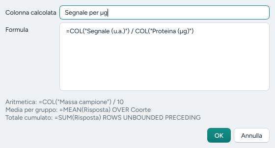
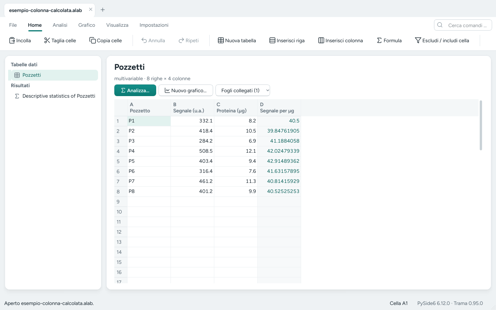

GuidaDati e formuleColonna calcolata
Creare una colonna calcolata
In otto pozzetti hai misurato un segnale e la quantità di proteina caricata. Vuoi il segnale per µg senza ricopiare i numeri a mano, e vuoi che il conto si aggiorni se correggi un valore.
- Verificato Trama 0.95.0 beta
- Dati 8 pozzetti sintetici
- Seme 5
- Lettura 5 minuti
Quando usarla
Una colonna calcolata contiene una formula che Trama applica riga per riga alle altre colonne della stessa tabella. Non copia numeri: se cambi un valore di origine, il risultato si ricalcola, e nel progetto viene salvata la formula, non i valori.
Serve per normalizzare su una quantità di riferimento, convertire unità, fare differenze o rapporti fra misure della stessa riga. Prima di dividere controlla un’ipotesi:
- Il segnale è proporzionale al riferimento. Il rapporto segnale/proteina ha senso se il doppio della proteina dà il doppio del segnale e la retta passa per lo zero. Se a proteina zero resta un fondo, il rapporto cambia con la quantità caricata e introduce un effetto che non c’è. In quel caso togli prima il fondo, oppure usa la proteina come covariata invece che come divisore.
- Le unità. Il nome della colonna nuova deve dire l’unità del risultato, qui «u.a. per µg».
I dati
Una tabella Variabili multiple con una riga per pozzetto: Pozzetto (P1–P8), Segnale (u.a.) e Proteina (µg). La proteina caricata va da 6,9 a 12,1 µg, quindi il segnale grezzo varia soprattutto per questo.
In Trama
- Apri il progetto con File → Apri…, oppure importa il CSV con File → Importa nel progetto… e aggiungi tu la formula.
- Seleziona la tabella Pozzetti e, nella scheda Home, premi Formula.
- In Colonna calcolata scrivi il nome della colonna nuova,
Segnale per µg. - In Formula scrivi
=COL("Segnale (u.a.)") / COL("Proteina (µg)")e premi OK. Trama prova la formula su tutta la tabella prima di accettarla; se un nome di colonna è sbagliato, l’errore compare nella finestra. - Per cambiarla seleziona una cella della colonna calcolata e premi di nuovo Formula: la finestra si apre con l’espressione attuale.

COL("…") serve quando il nome della colonna contiene spazi o parentesi. Fra le altre funzioni ci sono ABS, SQRT, LN, LOG10, ROUND, IF e MEAN.
Leggi il risultato
La colonna Segnale per µg compare a destra delle colonne di origine, con i numeri in verde per distinguerla dai dati inseriti a mano.
Mostra il foglio con la colonna calcolata

| Media | Deviazione standard | Coefficiente di variazione | |
|---|---|---|---|
| Segnale (u.a.) | 390,7 | 75,8 | 19,4 % |
| Segnale per µg | 41,18 | 0,98 | 2,4 % |
La variabilità fra pozzetti scende da 19,4% a 2,4%: quasi tutta veniva dalla quantità di proteina caricata. Media e deviazione standard vengono da Statistica descrittiva, già nel progetto; il coefficiente di variazione è la deviazione standard divisa per la media.
Una cella esclusa nella colonna di origine
Escludi la proteina del pozzetto P3: selezionala e premi Home → Escludi / includi cella. La cella calcolata di P3 diventa vuota, perché un rapporto con un valore escluso non ha un risultato. La colonna calcolata resta con 7 valori e la media diventa 41,18 (41,1798 contro 41,1808 con tutti e otto).
È il comportamento corretto, ma se non te ne accorgi pensi di avere otto pozzetti e ne analizzi sette. Come accorgersene: nella colonna calcolata c’è una cella vuota dove le colonne di origine hanno un numero; in Statistica descrittiva la riga N vale 7 e Missing vale 1. Per ripristinare, seleziona di nuovo la cella e premi lo stesso comando.
Cosa riportare
- La formula esatta e le unità del risultato.
- Perché il rapporto è giustificato: proporzionalità e assenza di fondo, oppure come il fondo è stato tolto.
- Celle escluse e numero di valori usati.
- Versione di Trama e progetto
.alabcon la formula.
Il segnale di ciascun pozzetto è stato diviso per la quantità di proteina caricata con una colonna calcolata in Trama 0.95.0 beta (formula
=COL("Segnale (u.a.)") / COL("Proteina (µg)")). La normalizzazione ha ridotto il coefficiente di variazione fra pozzetti dal 19,4% al 2,4% (n = 8).
Fonti
- Curran-Everett D. (2013). Explorations in statistics: the analysis of ratios and normalized data. Advances in Physiology Education, 37(3), 213–219. doi:10.1152/advan.00053.2013
- Kronmal R. A. (1993). Spurious correlation and the fallacy of the ratio standard revisited. Journal of the Royal Statistical Society A, 156(3), 379–392. doi:10.2307/2983064
Verificato con Trama 0.95.0 beta (tag v0.95.0, commit 4c07db6) il 20 novembre 2026. Formule in analisi/data.py, finestra in trama_qt/formula.py.